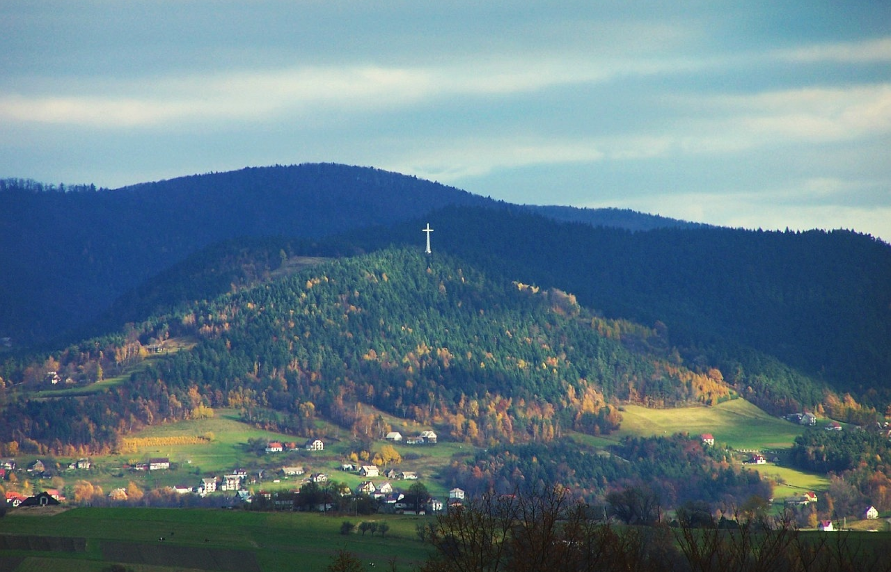

Co robimy
Fundacja Humanus
Fundacja Humanus zajmuje się szeroko pojętą opieką nad osobami niepełnosprawnymi, starszymi a także pomocą rodzinom, w których pojawiła się choroba lub niepełnosprawność. Nasze usługi dotyczą usług pielęgnacyjnych: kąpieli, karmienia, rehabilitacji przyłóżkowej tzw zachowawczej ,obsługi osób nieradzących sobie z czynnościami dnia codziennego. Zajmujemy się też sprzątaniem i pomocą w prowadzeniu domu.
Celem naszym jest też edukacja rodzin, pomoc w radzeniu sobie w trudnych sytuacjach jakie dotykają bliskich osoby chorej lub niepełnosprawnej. Zdajemy sobie sprawę jak obciążająca a przecież bliska sercu jest opieka nad osobą kochaną. Z nami się uda. Załatwiamy sprawy w urzędach lub doradzamy o jaką pomoc można się ubiegać. Jeśli nie wiedzą Państwo w czym i jak możemy pomóc wystarczy zadzwonić. Dla na s najważniejszy jest człowiek!
Celem naszym jest też edukacja rodzin, pomoc w radzeniu sobie w trudnych sytuacjach jakie dotykają bliskich osoby chorej lub niepełnosprawnej. Zdajemy sobie sprawę jak obciążająca a przecież bliska sercu jest opieka nad osobą kochaną. Z nami się uda. Załatwiamy sprawy w urzędach lub doradzamy o jaką pomoc można się ubiegać. Jeśli nie wiedzą Państwo w czym i jak możemy pomóc wystarczy zadzwonić. Dla na s najważniejszy jest człowiek!
Gdzie działamy
Powiat Limanowski
Powiat Limanowski jest regionem typowo górzystym. Większą jego część zajmuje Beskid Wyspowy, natomiast część południowa powiatu obejmuje północne stoki Gorców z Gorczańskim Parkiem Narodowym, który niemal w całości znajduje się na terenie powiatu. Cenne walory przyrodnicze powiatu są wizytówką dla turystyki górskiej. Ze szczytów Beskidu Wyspowego podziwiać można rozległe panoramy Tatr, Gorców czy Babiej Góry.
Wspomóż nas
Jeśli chcecie nas wspomóc w rozwoju, umożliwiliśmy wpłacenie datków na specjalne konto bankowe:
Za pomoc z góry Dziękujemy ❤️
30 1940 1076 3230 7551 0000 0000Mamy nadzieje że to przedsięwzięcie otworzy nam wiele możliwości.
Za pomoc z góry Dziękujemy ❤️